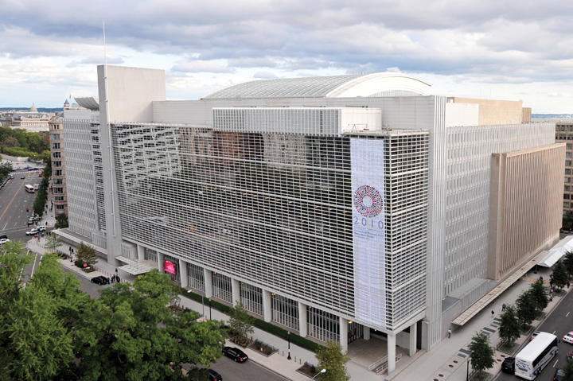

Global trade depends on the smooth exchange of currencies between countries. Businesses rely on a predictable and stable mechanism. This chapter takes a look at the recent history of global monetary systems and how they have evolved over the past two centuries. While the current monetary system continues to evolve, lessons learned over the past fifty years help determine the best future options. As part of the post–World War II monetary environment, two institutions were created; these institutions have expanded to play an increasingly larger role in world economy. Understanding the role of the IMF and the World Bank provides insight into how governments in developing countries prioritize and fund projects and work with the private sector to implement these initiatives.
Who Is McKinsey?
McKinsey & Company is a privately held global management-consulting firm that serves as a trusted adviser to the world’s leading businesses, governments, and institutions. Recognized as a global leader, it has ranked first as the most prestigious firm in the management consulting industry by Vault.com.“McKinsey & Company,” Vault, accessed February 9, 2011, http://www.vault.com/wps/portal/usa/companies/company-profile?WCM_GLOBAL_CONTEXT=/wps/wcm/connect/Vault_Content_Library/companies+site/companies/parent_mckinsey+_+company/mckinsey+_+company_0/mckinsey+_+company_0&companyId=328.
James O. “Mac” McKinsey, an accounting professor at the University of Chicago, founded McKinsey & Company in Chicago in 1926. Over the decades, McKinsey & Company has grown to global prominence by providing expert consulting services and garnering results for companies in a wide range of industries and governments.
Today, McKinsey has a revenue of $6 billion and employs almost 17,000 people worldwide, with more than 9,000 at the director level. “The firm is among the largest hirers of newly minted MBAs in the United States.”“America’s Largest Private Companies: #54 McKinsey & Co.,” Forbes, October 28, 2009, accessed February 9, 2011, http://www.forbes.com/lists/2009/21/private-companies-09_McKinsey-Co_IPPW.html (emphasis added). McKinsey’s employees come from around the world, speaking over 120 languages and representing more than one hundred nationalities.
What Does the Firm Do?
As a management consultant firm, McKinsey is approached by its clients to analyze and solve complex problems. Its industry expertise ranges from media and entertainment to the automotive industry, chemicals, and manufacturing. Functional expertise includes all aspects of running a business, including, finance, technology, sales, marketing, risk, and operations. McKinsey has its own Global Institute whose “independent investigations combine McKinsey’s microeconomic understanding of companies and industries with the rigor of leading macroeconomic thinking to derive perspectives on the global forces shaping business, government, and society.”“McKinsey Global Institute,” McKinsey & Company, accessed February 9, 2011, http://www.mckinsey.com/mgi.
The Global Institute is one of McKinsey’s paths to assisting governments and global institutions with complex economic and business issues. “Twenty years of McKinsey Global Institute research shows that the mix of sectors within an economy explains very little of the difference in a country’s GDP growth rate. In other words, dynamism doesn’t turn on whether an economy has a large financial sector, or big manufacturers, or a semiconductor industry, but instead on whether the sectors are competitive or not. Instead of picking winners and funneling subsidies to them, countries must get the basics right. These include a solid rule of law, with patents and protections for intellectual property, enforceable contracts, and courts to resolve disputes; access to finance, particularly for startups; and an efficient physical and communications infrastructure.”James Manyika, Susan Lund, and Byron Auguste, “From the Ashes,” Newsweek, August 16, 2010, accessed February 9, 2011, http://www.newsweek.com/2010/08/16/mckinsey-institute-create-jobs-by-losing-them.html.
Why Does the Firm Matter to International Business?
This chapter discusses the international monetary system, the IMF and the World Bank. In learning about these critical parts of the global business environment, you may find yourself wondering how exactly these institutions and government-led monetary systems interact with the business world. Learning about the business of a management consulting firm like McKinsey helps to illustrate this link.
Over the decades, McKinsey has helped global businesses understand how to enter new markets around the world, how to compete more effectively against their global competitors, and how to harness efficiencies and make improvements in all levels of business. Simultaneously, McKinsey has discreetly been an advisor to governments around the world on diverse issues, including how to amend policy and regulation to encourage more trade and investment in their countries; developing and implementing processes for privatizing industries; and creating more efficiencies in the public sector. At the same time, McKinsey has helped the IMF and the World Bank craft policy to meet their evolving roles in the world economy. Given the often politically charged global environment, it’s clear why a company like McKinsey prefers to remain out of the public eye. Much of the work that the firm is engaged in impacts the daily lives of people around the world. Businesses and governments are attracted to McKinsey not only for its sound analysis and advice but also for its discretion and long-term perspective.
McKinsey’s consultants form an enviable global network that extends even to former employees. McKinsey operates under a practice of “up or out,” meaning that consultants must either advance in their consulting careers within a predefined time frame or leave the firm. It’s not uncommon to find that a consultant will leave McKinsey to join their clients in the private sector or work for a government or global institution. This network of “McKinsey-ites,” as they are sometimes called, is evident in their influence on policy that could impact their business clients—either on a country basis or industry basis. This network helps attract some of the best business school graduates to the firm.
As noted on its website, people “who join McKinsey find themselves part of a unique culture, shaped by shared values and a desire to help clients make substantial improvements in their performance. When consultants leave, their connection to our firm and their former colleagues remains strong. Our alumni number nearly 23,000 and work in virtually every business sector in almost 120 countries. Through formal events and informal networking, former McKinsey consultants make and sustain professional relationships. This dynamic network is a lasting benefit of a career with McKinsey. Our firm provides support to alumni who want to stay in touch with us and with each other, sponsoring events worldwide.”“Alumni,” McKinsey & Company, accessed February 9, 2011, http://www.mckinsey.com/aboutus/alumni.
One of the more interesting aspects of McKinsey’s business approach is its nonexclusivity. Consultants develop expertise and can work for direct competitors after short holding periods of one or two years. Other companies in the same industry often see this as an opportunity to learn more about their competitors’ strategies—knowing that a competitor has hired McKinsey provides a strong impetus for companies to seek McKinsey’s assistance themselves. However, McKinsey does keep its client list confidential, and consultants themselves are not allowed to discuss their work with other teams.
The McKinsey mystique is another interesting aspect of the firm that adds to the secrecy that surrounds it. Despite its size, the firm does not discuss specific client situations and maintains a carefully crafted and low-profile external image, which also protects it from public scrutiny. The McKinsey commitment to discretion has earned it global private and public-sector clients and respect.
Roundly considered to be the most prestigious company of its kind, it has achieved a level of renown so great as to be known even to laymen, despite shrouding details of its work—and its client list—in secrecy. In its practice areas, it addresses strategic, organizational, operational and technological issues, always with a focus—according to the firm—of doing what is right for the client’s business, not what is best for McKinsey’s bottom line. As for the range of those specialties, the list of industrial sectors the firm serves encompasses everything from commodities and natural resources to the worlds of media, entertainment and high tech. While it doesn’t give up the names of its clients (even in case studies it refers to them with pseudonyms such as “BigBank”) the firm does claim to serve more than 70 percent of Fortune’s Most Admired Companies list, roughly 90 percent of the top-100 corporations worldwide and 80 percent of the 100 largest U.S.-based companies.“McKinsey & Company,” Vault, accessed February 9, 2011, http://www.vault.com/wps/portal/usa/companies/company-profile?WCM_GLOBAL_CONTEXT=/wps/wcm/connect/Vault_Content_Library/companies+site/companies/parent_mckinsey+_+company/mckinsey+_+company_0/mckinsey+_+company_0&companyId=328.
While it’s hard to know exact details of its pricing, client base, success rate, and profitability, it’s clear that the company continues to earn the trust and loyalty of many of the world’s companies, governments, and global institutions.
(AACSB: Ethical Reasoning, Multiculturalism, Reflective Thinking, Analytical Skills)
Why do economies need money? This chapter defines money as a unit of account that is used as a medium of exchange in trasactions. Without money, individuals and businesses would have a harder time obtaining (purchasing) or exchanging (selling) what they need, want, or make. Money provides us with a universally accepted medium of exchange.
Before the current monetary system can be fully appreciated, it’s helpful to look back at history and see how money and systems governing the use of money have evolved. Thousands of years ago, people had to barter if they wanted to get something. That worked well if the two people each wanted what the other had. Even today, bartering exists. (Chapter 9 "Exporting, Importing, and Global Sourcing" discusses modern bartering and countertrade.)
History shows that ancient Egypt and Mesopotamia—which encompasses the land between the Euphrates and Tigris Rivers and is modern-day Iraq, parts of eastern Syria, southwest Iran, and southeast Turkey—began to use a system based on the highly coveted coins of gold and silver, also known as bullionPurest form of the precious metal and usually in a bar or coin format. Often refers to gold or silver bars or coins; typically used for monetary or economic purposes., which is the purest form of the precious metal. However, bartering remained the most common form of exchange and trade.
Gold and silver coins gradually emerged in the use of trading, although the level of pure gold and silver content impacted the coins value. Only coins that consist of the pure precious metal are bullions; all other coins are referred to simply as coins. It is interesting to note that gold and silver lasted many centuries as the basis of economic measure and even into relatively recent history of the gold standard, which we’ll cover in the next section. Fast-forward two thousand years and bartering has long been replaced by a currency-based system. Even so, there have been evolutions in the past century alone on how—globally—the monetary system has evolved from using gold and silver to represent national wealth and economic exchange to the current system.
Throughout history, some types of money have gained widespread circulation outside of the nations that issued them. Whenever a country or empire has regional or global control of trade, its currency becomes the dominant currency for trade and governs the monetary system of that time. In the middle of a period that relies on one major currency, it’s easy to forget that, throughout history, there have been other primary currencies—a historical cycle. Generally, the best currency to use is the most liquid one, the one issued by the nation with the biggest economy as well as usually the largest import-export markets. Rarely has a single currency been the exclusive medium of world trade, but a few have come close. Here’s a quick look at some of some of the most powerful currencies in history:
Let’s take a look at the last century of the international monetary system evolution. International monetary systemThe system and rules that govern the use of money around the world and between countries. refers to the system and rules that govern the use and exchange of money around the world and between countries. Each country has its own currency as money and the international monetary system governs the rules for valuing and exchanging these currencies.
Until the nineteenth century, the major global economies were regionally focused in Europe, the Americas, China, and India. These were loosely linked, and there was no formal monetary system governing their interactions. The rest of this section reviews the distinct chronological periods over the past 150 years leading to the development of the modern global financial system. Keep in mind that the system continues to evolve and each crisis impacts it. There is not likely to be a final international monetary system, simply one that reflects the current economic and political realities. This is one main reason why understanding the historical context is so critical. As the debate about the pros and cons of the current monetary system continues, some economists are tempted to advocate a return to systems from the past. Businesses need to be mindful of these arguments and the resulting changes, as they will be impacted by new rules, regulations, and structures.
As mentioned earlier in this section, ancient societies started using gold as a means of economic exchange. Gradually more countries adopted gold, usually in the form of coins or bullion, and this international monetary system became known as the gold standardThe pre–World War I global monetary system that used gold as the basis of international economic exchange.. This system emerged gradually, without the structural process in more recent systems. The gold standard, in essence, created a fixed exchange rate systemA system in which the price of one currency vis-à-vis another is fixed and does not change.. An exchange rateThe price of one currency in terms of a second currency. is the price of one currency in terms of a second currency. In the gold standard system, each country sets the price of its currency to gold, specifically to one ounce of gold. A fixed exchange rate stabilizes the value of one currency vis-à-vis another and makes trade and investment easier.
Our modern monetary system has its roots in the early 1800s. The defeat of Napoleon in 1815, when France was beaten at the Battle of Waterloo, made Britain the strongest nation in the world, a position it held for about one hundred years. In Africa, British rule extended at one time from the Cape of Good Hope to Cairo. British dominance and influence also stretched to the Indian subcontinent, the Malaysian peninsula, Australia, New Zealand—which attracted British settlers—and Canada. Under the banner of the British government, British companies advanced globally and were the largest companies in many of the colonies, controlling trade and commerce. Throughout history, strong countries, as measured mainly in terms of military might, were able to advance the interests of companies from their countries—a fact that has continued to modern times, as seen in the global prowess of American companies. Global firms in turn have always paid close attention to the political, military, and economic policies of their and other governments.
In 1821, the United Kingdom, the predominant global economy through the reaches of its colonial empire, adopted the gold standard and committed to fixing the value of the British pound. The major trading countries, including Russia, Austria-Hungary, Germany, France, and the United States, also followed and fixed the price of their currencies to an ounce of gold.
The United Kingdom officially set the price of its currency by agreeing to buy or sell an ounce of gold for the price of 4.247 pounds sterling. At that time, the United States agreed to buy or sell an ounce of gold for $20.67. This enabled the two currencies to be freely exchanged in terms of an ounce of gold. In essence,
£4.247 = 1 ounce of gold = $20.67.The exchange rate between the US dollar and the British pound was then calculated by
$20.67/£4.247 = $4.867 to £1.The gold standard dramatically reduced the risk in exchange rates because it established fixed exchange rates between currencies. Any fluctuations were relatively small. This made it easier for global companies to manage costs and pricing. International trade grew throughout the world, although economists are not always in agreement as to whether the gold standard was an essential part of that trend.
The second advantage is that countries were forced to observe strict monetary policies. They could not just print money to combat economic downturns. One of the key features of the gold standard was that a currency had to actually have in reserve enough gold to convert all of its currency being held by anyone into gold. Therefore, the volume of paper currency could not exceed the gold reserves.
The third major advantage was that gold standard would help a country correct its trade imbalance. For example, if a country was importing more than it is exporting, (called a trade deficitWhen the value of imports is greater than the value of exports.), then under the gold standard the country had to pay for the imports with gold. The government of the country would have to reduce the amount of paper currency, because there could not be more currency in circulation than its gold reserves. With less money floating around, people would have less money to spend (thus causing a decrease in demand) and prices would also eventually decrease. As a result, with cheaper goods and services to offer, companies from the country could export more, changing the international trade balance gradually back to being in balance. For these three primary reasons, and as a result of the 2008 global financial crises, some modern economists are calling for the return of the gold standard or a similar system.
If it was so good, what happened? The gold standard eventually collapsed from the impact of World War I. During the war, nations on both sides had to finance their huge military expenses and did so by printing more paper currency. As the currency in circulation exceeded each country’s gold reserves, many countries were forced to abandon the gold standard. In the 1920s, most countries, including the United Kingdom, the United States, Russia, and France, returned to the gold standard at the same price level, despite the political instability, high unemployment, and inflation that were spread throughout Europe.
However, the revival of the gold standard was short-lived due to the Great Depression, which began in the late 1920s. The Great Depression was a worldwide phenomenon. By 1928, Germany, Brazil, and the economies of Southeast Asia were depressed. By early 1929, the economies of Poland, Argentina, and Canada were contracting, and the United States economy followed in the middle of 1929. Some economists have suggested that the larger factor tying these countries together was the international gold standard, which they believe prolonged the Great Depression.The Concise Encyclopedia of Economics, s.v. “Great Depression,” accessed July 23, 2010, http://www.econlib.org/library/Enc/GreatDepression.html. The gold standard limited the flexibility of the monetary policy of each country’s central banks by limiting their ability to expand the money supply. Under the gold standard, countries could not expand their money supply beyond what was allowed by the gold reserves held in their vaults.
Too much money had been created during World War I to allow a return to the gold standard without either large currency devaluations or price deflations. In addition, the US gold stock had doubled to about 40 percent of the world’s monetary gold. There simply was not enough monetary gold in the rest of the world to support the countries’ currencies at the existing exchange rates.
By 1931, the United Kingdom had to officially abandon its commitment to maintain the value of the British pound. The currency was allowed to floatWhen a currency’s value increases or decreases based on demand and supply., which meant that its value would increase or decrease based on demand and supply. The US dollar and the French franc were the next strongest currencies and nations sought to peg the value of their currencies to either the dollar or franc. However, in 1934, the United States devalued its currency from $20.67 per ounce of gold to $35 per ounce. With a cheaper US dollar, US firms were able to export more as the price of their goods and services were cheaper vis-à-vis other nations. Other countries devalued their currencies in retaliation of the lower US dollar. Many of these countries used arbitrary par values rather than a price relative to their gold reserves. Each country hoped to make its exports cheaper to other countries and reduce expensive imports. However, with so many countries simultaneously devaluing their currencies, the impact on prices was canceled out. Many countries also imposed tariffs and other trade restrictions in an effort to protect domestic industries and jobs. By 1939, the gold standard was dead; it was no longer an accurate indicator of a currency’s real value.
The demise of the gold standard and the rise of the Bretton Woods system pegged to the US dollar was also a changing reflection of global history and politics. The British Empire’s influence was dwindling. In the early 1800s, with the strength of both their currency and trading might, the United Kingdom had expanded its empire. At the end of World War I, the British Empire spanned more than a quarter of the world; the general sentiment was that “the sun would never set on the British empire.” British maps and globes of the time showed the empire’s expanse proudly painted in red. However, shortly after World War II, many of the colonies fought for and achieved independence. By then, the United States had clearly replaced the United Kingdom as the dominant global economic center and as the political and military superpower as well.
Just as the United States became a global military and political superpower, US businesses were also taking center stage. Amoco (today now part of BP), General Motors (GM), Kellogg’s, and Ford Motor Company sought to capitalize on US political and military strength to expand in new markets around the world. Many of these companies followed global political events and internally debated the strategic directions of their firms. For example, GM had an internal postwar planning policy group.
Notwithstanding the economic uncertainties that were bound to accompany the war’s end, a few of the largest U.S. corporations, often with considerable assets seized or destroyed during the war, began to plan for the postwar period. Among these was General Motors. As early as 1942 the company had set up a postwar planning policy group to estimate the likely shape of the world after the war and to make recommendations on GM’s postwar policies abroad.
In 1943 the policy group reported the likelihood that relations between the Western powers and the Soviet Union would deteriorate after the war. It also concluded that, except for Australia, General Motors should not buy plants and factories to make cars in any country that had not had facilities before the conflict. At the same time, though, it stated that after the war the United States would be in a stronger state politically and economically than it had been after World War I and that overseas operations would flourish in much of the world. The bottom line for GM, therefore, was to proceed with caution once the conflict ended but to stick to the policy it had enunciated in the 1920s—seeking out markets wherever they were available and building whatever facilities were needed to improve GM’s market share.Encyclopedia of the New American Nation, s.v. “Multinational Corporations—Postwar Investment: 1945–1955,” accessed February 9, 2011, http://www.americanforeignrelations.com/E-N/Multinational-Corporations-Postwar-investment-1945-1955.html#ixzz18TCwg8VJ.
In the early 1940s, the United States and the United Kingdom began discussions to formulate a new international monetary system. John Maynard Keynes, a highly influential British economic thinker, and Harry Dexter White, a US Treasury official, paved the way to create a new monetary system. In July 1944, representatives from forty-four countries met in Bretton Woods, New Hampshire, to establish a new international monetary system.
“The challenge,” wrote Ngaire Woods in his book The Globalizers: The IMF, the World Bank, and Their Borrowers, “was to gain agreement among states about how to finance postwar reconstruction, stabilize exchange rates, foster trade, and prevent balance of payments crises from unraveling the system.”Ngaire Woods, Globalizers: The IMF, the World Bank, and Their Borrowers (Ithaca, NY: Cornell University Press, 2006), 16.
Throughout history, political, military, and economic discussions between nations have always occurred simultaneously in an effort to create synergies between policies and efforts. A key focus of the 1940s efforts for a new global monetary system was to stabilize war-torn Europe.
In the decade following the war the administrations of both Harry Truman and Dwight Eisenhower looked to the private sector to assist in the recovery of western Europe, both through increased trade and direct foreign investments. In fact, the $13 billion Marshall Plan, which became the engine of European recovery between 1948 and 1952, was predicated on a close working relationship between the public and private sectors. Similarly, Eisenhower intended to bring about world economic recovery through liberalized world commerce and private investment abroad rather than through foreign aid. Over the course of his two administrations (1953–1961), the president modified his policy of “trade not aid” to one of “trade and aid” and changed his focus from western Europe to the Third World, which he felt was most threatened by communist expansion. In particular he was concerned by what he termed a “Soviet economic offensive” in the Middle East, that is, Soviet loans and economic assistance to such countries as Egypt and Syria. But even then he intended that international commerce and direct foreign investments would play a major role in achieving global economic growth and prosperity.Encyclopedia of the New American Nation, s.v. “Multinational Corporations—Postwar Investment: 1945–1955,” accessed February 9, 2011, http://www.americanforeignrelations.com/E-N/Multinational-Corporations-Postwar-investment-1945-1955.html#ixzz18TCwg8VJ.
The resulting Bretton Woods Agreement created a new dollar-based monetary system, which incorporated some of the disciplinary advantages of the gold system while giving countries the flexibility they needed to manage temporary economic setbacks, which had led to the fall of the gold standard. The Bretton Woods Agreement lasted until 1971 and established several key features.
Fixed exchange rates are also sometimes called pegged rates. One of the critical factors that led to the fall of the gold standard was that after the United Kingdom abandoned its commitment to maintaining the value of the British pound, countries sought to peg their currencies to the US dollar. With the strength of the US economy, the gold supply in the United States increased, while many countries had less gold in reserve than they did currency in circulation. The Bretton Woods system worked to fix this by tying the value of the US dollar to gold but also by tying all of the other countries to the US dollar rather than directly to gold. The par value of the US dollar was fixed at $35 to one ounce of gold. All other countries then set the value of their currencies to the US dollar. In reflection of the changing times, the British pound had undergone a substantial loss in value and by that point, its value was $2.40 to £1. Member countries had to maintain the value of their currencies within 1 percent of the fixed exchange rate. Lastly, the agreement established that only governments, rather than anyone who demanded it, could convert their US dollar holdings into gold—a major improvement over the gold standard. In fact, most businesspeople eventually ignored the technicality of pegging the US dollar to gold and simply utilized the actual exchange rates between countries (e.g., the pound to the dollar) as an economic measure for doing business.
To enable countries to manage temporary but serious downturns, the Bretton Woods Agreement provided for a devaluation of a currency—more than 10 percent if needed. Countries could not use this tool to competitively manipulate imports and exports. Rather, the tool was intended to prevent the large-scale economic downturn that took place in the 1930s.
Section 6.2 "What Is the Role of the IMF and the World Bank?" looks at the International Monetary Fund and the World Bank more closely, as they have survived the collapse of the Bretton Woods Agreement. In essence, the IMF’s initial primary purpose was to help manage the fixed rate exchange system; it eventually evolved to help governments correct temporary trade imbalances (typically deficits) with loans. The World Bank’s purpose was to help with post–World War II European reconstruction. Both institutions continue to serve these roles but have evolved into broader institutions that serve essential global purposes, even though the system that created them is long gone. Section 6.2 "What Is the Role of the IMF and the World Bank?" explores them in greater detail and addresses the history, purpose, evolution, and current opportunities and challenges of both institutions.
Despite a fixed exchange rate based on the US dollar and more national flexibility, the Bretton Woods Agreement ran into challenges in the early 1970s. The US trade balance had turned to a deficit as Americans were importing more than they were exporting. Throughout the 1950s and 1960s, countries had substantially increased their holdings of US dollars, which was the only currency pegged to gold. By the late 1960s, many of these countries expressed concern that the US did not have enough gold reserves to exchange all of the US dollars in global circulation. This became known as the Triffin ParadoxNamed after the economist Robert Triffin, who stated that the more dollars foreign countries held, the less faith they had in the ability of the US government to convert those dollars., named after the economist Robert Triffin, who identified this problem. He noted that the more dollars foreign countries held, the less faith they had in the ability of the US government to convert those dollars. Like banks, though, countries do not keep enough gold or cash on hand to honor all of their liabilities. They maintain a percentage, called a reserveA main currency that many countries and institutions hold as part of their foreign exchange reserves. Reserve currencies are often international pricing currencies for world products and services. Current reserve currencies are the US dollar, the euro, the British pound, the Swiss franc, and the Japanese yen.. Bank reserve ratios are usually 10 percent or less. (The low reserve ratio has been blamed by many as a cause of the 2008 financial crisis.) Some countries state their reserve ratios openly, and most seek to actively manage their ratios daily with open-market monetary policies—that is, buying and selling government securities and other financial instruments, which indirectly controls the total money supply in circulation, which in turn impacts supply and demand for the currency.
The expense of the Vietnam War and an increase in domestic spending worsened the Triffin Paradox; the US government began to run huge budget deficits, which further weakened global confidence in the US dollar. When nations began demanding gold in exchange for their dollars, there was a huge global sell-off of the US dollar, resulting in the Nixon Shock in 1971.
The Nixon Shock was a series of economic decisions made by the US President Richard Nixon in 1971 that led to the demise of the Bretton Woods system. Without consulting the other member countries, on August 15, 1971, Nixon ended the free convertibility of the US dollar into gold and instituted price and wage freezes among other economic measures.
Later that same year, the member countries reached the Smithsonian Agreement, which devalued the US dollar to $38 per ounce of gold, increased the value of other countries’ currencies to the dollar, and increased the band within which a currency was allowed to float from 1 percent to 2.25 percent. This agreement still relied on the US dollar to be the strong reserve currency and the persistent concerns over the high inflation and trade deficits continued to weaken confidence in the system. Countries gradually dropped out of system—notably Germany, the United Kingdom, and Switzerland, all of which began to allow their currencies to float freely against the dollar. The Smithsonian Agreement was an insufficient response to the economic challenges; by 1973, the idea of fixed exchange rates was over.
Before moving on, recall that the major significance of the Bretton Woods Agreement was that it was the first formal institution that governed international monetary systems. By having a formal set of rules, regulations, and guidelines for decision making, the Bretton Woods Agreement established a higher level of economic stability. International businesses benefited from the almost thirty years of stability in exchange rates. Bretton Woods established a standard for future monetary systems to improve on; countries today continue to explore how best to achieve this. Nothing has fully replaced Bretton Woods to this day, despite extensive efforts.
When Bretton Woods was established, one of the original architects, Keynes, initially proposed creating an international currency called Bancor as the main currency for clearing. However, the Americans had an alternative proposal for the creation of a central currency called unitas. Neither gained momentum; the US dollar was the reserve currency. Reserve currencyA main currency that many countries and institutions hold as part of their foreign exchange reserves. Reserve currencies are often international pricing currencies for world products and services. Current reserve currencies are the US dollar, the euro, the British pound, the Swiss franc, and the Japanese yen. is a main currency that many countries and institutions hold as part of their foreign exchange reserves. Reserve currencies are often international pricing currencies for world products and services. Examples of current reserve currencies are the US dollar, the euro, the British pound, the Swiss franc, and the Japanese yen.
Many feared that the collapse of the Bretton Woods system would bring the period of rapid growth to an end. In fact, the transition to floating exchange rates was relatively smooth, and it was certainly timely: flexible exchange rates made it easier for economies to adjust to more expensive oil, when the price suddenly started going up in October 1973. Floating rates have facilitated adjustments to external shocks ever since.
The IMF responded to the challenges created by the oil price shocks of the 1970s by adapting its lending instruments. To help oil importers deal with anticipated current account deficits and inflation in the face of higher oil prices, it set up the first of two oil facilities.“The End of the Bretton Woods System (1972–81),” International Monetary Fund, accessed July 26, 2010, http://www.imf.org/external/about/histend.htm.
After the collapse of Bretton Woods and the Smithsonian Agreement, several new efforts tried to replace the global system. The most noteworthy regional effort resulted in the European Monetary System (EMS) and the creation of a single currency, the euro. While there have been no completely effective efforts to replace Bretton Woods on a global level, there have been efforts that have provided ongoing exchange rate mechanisms.
In 1976, countries met to formalize a floating exchange rate system as the new international monetary system. The Jamaica Agreement established a managed float system of exchange ratesA system in which currencies float against one another with governments intervening only to stabilize their currencies at set target exchange rates., in which currencies float against one another with governments intervening only to stabilize their currencies at set target exchange rates. This is in contrast to a completely free floating exchange rate systemA system in which currencies freely float against each other and there is no government intervention., which has no government intervention; currencies float freely against one another. The Jamaica Agreement also removed gold as the primary reserve asset of the IMF. Additionally, the purpose of the IMF was expanded to include lending money as a last resort to countries with balance-of-payment challenges.
In the early 1980s, the value of the US dollar increased, pushing up the prices of US exports and thereby increasing the trade deficit. To address the imbalances, five of the world’s largest economies met in September 1985 to determine a solution. The five countries were Britain, France, Germany, Japan, and the United States; this group became known as the Group of FiveThe original five largest industrial powers—Britain, France, Germany, Japan, and the United States—who met to reduce and stabilize the value of the dollar., shortened to G5. The 1985 agreement, called the Plaza Accord because it was held at the Plaza Hotel in New York City, focused on forcing down the value of the US dollar through collective efforts.
By February 1987, the markets had pushed the dollar value down, and some worried it was now valued too low. The G5 met again, but now as the Group of Seven, adding Italy and Canada—it became known as the G7. The Louvre Accord, so named for being agreed on in Paris, stabilized the dollar. The countries agreed to support the dollar at the current valuation. The G7 continued to meet regularly to address ongoing economic issues.
The G7 was expanded in 1999 to include twenty countries as a response to the financial crises of the late 1990s and the growing recognition that key emerging-market countries were not adequately included in the core of global economic discussions and governance. It was not until a decade later, though, that the G20 effectively replaced the G8, which was made up of the original G7 and Russia. The European Union was represented in G20 but could not host or chair the group.
Keeping all of these different groups straight can be very confusing. The news may report on different groupings as countries are added or removed from time to time. The key point to remember is that anything related to a G is likely to be a forum consisting of finance ministers and governors of central banks who are meeting to discuss matters related to cooperating on an international monetary system and key issues in the global economy.
The G20 is likely to be the stronger forum for the foreseeable future, given the number of countries it includes and the amount of world trade it represents. “Together, member countries represent around 90 per cent of global gross national product, 80 per cent of world trade (including EU intra-trade) as well as two-thirds of the world’s population.”“About G-20,” G-20, accessed July 25, 2010, http://www.g20.org/en.
G-ology
“At present, a number of groups are jostling to be the pre-eminent forum for discussions between world leaders. The G20 ended 2009 by in effect replacing the old G8. But that is not the end of the matter. In 2010 the G20 began to face a new challenger—G2 [the United States and China]. To confuse matters further, lobbies have emerged advocating the formation of a G13 and a G3.”Gideon Rachman, “A Modern Guide to G-ology,” Economist, November 13, 2009, accessed February 9, 2011, http://www.economist.com/node/14742524. The G20 is a powerful, informal group of nineteen countries and the European Union. It also includes a representative from the World Bank and the International Monetary Fund. The list developed from an effort to include major developing countries with countries with developed economies. Its purpose is to address issues of the international financial system.
So just who’s in the current G20?
While there is not an official replacement to the Bretton Woods system, there are provisions in place through the ongoing forum discussions of the G20. Today’s system remains—in large part—a managed float system, with the US dollar and the euro jostling to be the premier global currency. For businesses that once quoted primarily in US dollars, pricing is now just as often noted in the euro as well.
The Wall Street Journal’s July 30, 2010, edition noted how gangsters are helping provide stability in the euro zone. The highest denomination of a euro is a €500 bill, in contrast to the United States, where the largest bill is a $100 bill.
The high-value bills are increasingly “making the euro the currency of choice for underground and black economies, and for all those who value anonymity in their financial transactions and investments,” wrote Willem Buiter, the chief economist at Citigroup….
When euro notes and coins went into circulation in January 2002, the value of €500 notes outstanding was €30.8 billion ($40 billion), according to the ECB [European Central Bank].
Today some €285 billion worth of such euro notes are in existence, an annual growth rate of 32 percent. By value, 35 percent of euro notes in circulation are in the highest denomination, the €500 bill that few people ever see.
In 1998, then-U.S. Treasury official Gary Gensler worried publicly about the competition to the $100 bill, the biggest U.S. bank note, posed by the big euro notes and their likely use by criminals. He pointed out that $1 million in $100 bills weighs 22 pounds; in hypothetical $500 bills, it would weigh just 4.4 pounds.
Police forces have found the big euro notes in cereal boxes, tires and in hidden compartments in trucks, says Soren Pedersen, spokesman for Europol, the European police agency based in The Hague. “Needless to say, this cash is often linked to the illegal drugs trade, which explains the similarity in methods of concealment that are used.”Stephen Fidler, “How Gangsters Are Saving Euro Zone,” Wall Street Journal, July 30, 2010, accessed February 9, 2011, http://online.wsj.com/article/SB10001424052748704532204575397543634034112.html.
While you might think that the ECB should just stop issuing the larger denominations, it turns out that the ECB and the member governments of the euro zone actually benefit from this demand.
The profit a central bank gains from issuing currency—as well as from other privileges of a central bank, such as being able to demand no-cost or low-cost deposits from banks—is known as seigniorage. It normally accrues to national treasuries once the central banks account for their own costs.
The ECB’s gains from seigniorage are becoming increasingly important this year….
In recent years, the profits on its issue of new paper currency have been running at €50 billion.”Stephen Fidler, “How Gangsters Are Saving Euro Zone,” Wall Street Journal, July 30, 2010, accessed February 9, 2011, http://online.wsj.com/article/SB10001424052748704532204575397543634034112.html.
Some smaller nations have chosen to voluntarily set exchange rates against the dollar while other countries have selected the euro. Usually a country makes the decision between the dollar and the euro by reviewing their largest trading partners. By choosing the euro or the dollar, countries seek currency stability and a reduction in inflation, among other various perceived benefits. Many countries in Latin America once dollarized to provide currency stability for their economy. Today, this is changing, as individual economies have strengthened and countries are now seeking to dedollarize.
Many countries in Latin America have endured years of political and economic instability, which has exacerbated the massive inequality that has characterized the societies in modern times. Most of the wealth is in the hands of the white elite, who live sophisticated lives in the large cities, eating in fancy restaurants and flying off to Miami for shopping trips. Indeed, major cities often look much like any other modern, industrialized cities, complete with cinemas, fast-food restaurants, Internet cafés, and shopping malls.
But while the rich enjoy an enviable lifestyle, the vast majority of the continent’s large indigenous population often lives in extreme poverty. While international aid programs attempt to alleviate the poverty, a lot depends on the country’s government. Corrupt governments slow down the pace of progress.
Over the past two decades, governments in Ecuador and Peru—as well as others in Latin America including Bolivia, Paraguay, Panama, El Salvador, and Uruguay—have opted to dollarize to stabilize their countries’ economies. Each country replaced its national currency with the US dollar. Each country has struggled economically despite abundant natural resources. Economic cycles in key industries, such as oil and commodities, contributed to high inflation. While the move to dollarize was not always popular domestically initially, its success has been clearly evident. In both Ecuador and Peru, dollarizing has provided a much needed benefit, although one country expects to continue aligning with the US dollar and the other hopes to move away from it.
In Ecuador, for example, a decade after dollarizing, one cannot dismiss the survival of dollarization as coincidence. Dollarization has provided Ecuador with the longest period of a stable, fully convertible currency in a century. Its foremost result has been that inflation has dropped to single digits and remained there for the first time since 1972. The stability that dollarization has provided has also helped the economy grow an average of 4.3 percent a year in real terms, fostering a drop in the poverty rate from 56 percent of the population in 1999 to 35 percent in 2008. As a result, dollarization has been popular, with polls showing that more than three-quarters of Ecuadorians approve of it.Pedro P. Romero, “Ecuador Dollarization: Anchor in a Storm,” Latin Business Chronicle, January 23, 2009, accessed February 9, 2011, http://www.latinbusinesschronicle.com/app/article.aspx?id=3096.
However, this success could not protect the country from the effects of the 2008 global financial crisis and economic downturn, which led to falling remittances and declining oil revenue for Ecuador. The country “lacks a reliable political system, legal system, or investment climate. Dollarization is the only government policy that provides Ecuadorians with a trustworthy basis for earning, saving, investing, and paying.”Pedro P. Romero, “Ecuador Dollarization: Anchor in a Storm,” Latin Business Chronicle, January 23, 2009, accessed February 9, 2011, http://www.latinbusinesschronicle.com/app/article.aspx?id=3096.
Peru first opted to dollarize in the early 1970s as a result of the high inflation, which peaked during the hyperinflation of 1988−90. “With high inflation, the U.S. dollar started to be the preferred means of payments and store of value.”Mercedes García-Escribano, “Peru: Drivers of De-dollarization,” International Monetary Fund, July 2010, accessed May 9, 2011, http://www.bcrp.gob.pe/docs/Publicaciones/Documentos-de-Trabajo/2010/Documento-de-Trabajo-11-2010.pdf. Dollarization was the only option to stabilize prices. A key cost of dollarizing, however, is losing monetary independence. Another cost is that the business cycle in the country is tied more closely to fluctuations in the US economy and currency. Balancing the benefits and the costs is an ongoing concern for governments.
Despite attempts to dedollarize in the 1980s, it was not until the recent decade that Peru has successfully pursued a market-driven financial dedollarization. Dedollarization occurs when a country reduces its reliance on dollarizing credit and deposit of commercial banks. In Peru, as in some other Latin American countries—such as Bolivia, Uruguay and Paraguay—dedollarization has been “driven by macroeconomic stability, introduction of prudential policies to better reflect currency risk (such as the management of reserve requirements), and the development of the capital market in soles” (the local Peruvian currency).Mercedes García-Escribano, “Peru: Drivers of De-dollarization, International Monetary Fund,” July 2010, accessed May 9, 2011, http://www.bcrp.gob.pe/docs/Publicaciones/Documentos-de-Trabajo/2010/Documento-de-Trabajo-11-2010.pdf.
Dedollarizing is still a relatively recent phenomenon, and economists are still trying to understand the implications and impact on businesses and the local economy in each country. What is clear is that governments view dedollarizing as one more tool toward having greater control over their economies.
(AACSB: Reflective Thinking, Analytical Skills)
Section 6.1 "What Is the International Monetary System?" discusses how, during the 1930s, the Great Depression resulted in failing economies. The fall of the gold standard led countries to raise trade barriers, devalue their currencies to compete against one another for export markets and curtail usage of foreign exchange by their citizens. All these factors led to declining world trade, high unemployment, and plummeting living standards in many countries. In 1944, the Bretton Woods Agreement established a new international monetary system. The creation of the International Monetary Fund (IMF) and the World Bank were two of its most enduring legacies.
The World Bank and the IMF, often called the Bretton Woods Institutions, are twin intergovernmental pillars supporting the structure of the world’s economic and financial order. Both have taken on expanding roles, and there have been renewed calls for additional expansion of their responsibilities, particularly in the continuing absence of a single global monetary agreement. The two institutions may seem to have confusing or overlapping functions. However, while some similarities exist (see the following figure), they are two distinct organizations with different roles.

“Despite these and other similarities, however, the Bank and the IMF remain distinct. The fundamental difference is this: the Bank is primarily a development institution; the IMF is a cooperative institution that seeks to maintain an orderly system of payments and receipts between nations. Each has a different purpose, a distinct structure, receives its funding from different sources, assists different categories of members, and strives to achieve distinct goals through methods peculiar to itself.”David D. Driscoll, “The IMF and the World Bank: How Do They Differ?,” International Monetary Fund, last updated August 1996, accessed February 9, 2011, http://www.imf.org/external/pubs/ft/exrp/differ/differ.htm (emphasis added). This section explores both of these institutions and how they have evolved in the almost seventy years since their creation.
Figure 6.1 IMF Headquarters in Washington, DC

Source: International Monetary Fund, 2011.
The architects of the Bretton Woods Agreement, John Maynard Keynes and Harry Dexter White, envisioned an institution that would oversee the international monetary system, exchange rates, and international payments to enable countries and their citizens to buy goods and services from each other. They expected that this new global entity would ensure exchange rate stability and encourage its member countries to eliminate the exchange restrictions that hindered trade. Officially, the IMF came into existence in December 1945 with twenty-nine member countries. (The Soviets, who were at Bretton Woods, refused to join the IMF.)
In 1947, the institution’s first formal year of operations, the French became the first nation to borrow from the IMF. Over the next thirty years, more countries joined the IMF, including some African countries in the 1960s. The Soviet bloc nations remained the exception and were not part of the IMF until the fall of the Berlin Wall in 1989. The IMF experienced another large increase in members in the 1990s with the addition of Russia; Russia was also placed on the IMF’s executive committee. Today, 187 countries are members of the IMF; twenty-four of those countries or groups of countries are represented on the executive board.
The purposes of the International Monetary Fund are as follows:
In addition to financial assistance, the IMF also provides member countries with technical assistance to create and implement effective policies, particularly economic, monetary, and banking policy and regulations.
A Special Drawing Right (SDR)An international monetary reserve asset of the IMF. is basically an international monetary reserve asset. SDRs were created in 1969 by the IMF in response to the Triffin Paradox. The Triffin Paradox stated that the more US dollars were used as a base reserve currency, the less faith that countries had in the ability of the US government to convert those dollars to gold. The world was still using the Bretton Woods system, and the initial expectation was that SDRs would replace the US dollar as the global monetary reserve currency, thus solving the Triffin Paradox. Bretton Woods collapsed a few years later, but the concept of an SDR solidified. Today the value of an SDR consists of the value of four of the IMF’s biggest members’ currencies—the US dollar, the British pound, the Japanese yen, and the euro—but the currencies do not hold equal weight. SDRs are quoted in terms of US dollars. The basket, or group of currencies, is reviewed every five years by the IMF executive board and is based on the currency’s role in international trade and finance. The following chart shows the current valuation in percentages of the four currencies.
| Currency | Weighting |
|---|---|
| US dollar | 44 percent |
| Euro | 34 percent |
| Japanese yen | 11 percent |
| British pound | 11 percent |
The SDR is not a currency, but some refer to it as a form of IMF currency. It does not constitute a claim on the IMF, which only serves to provide a mechanism for buying, selling, and exchanging SDRs. Countries are allocated SDRs, which are included in the member country’s reserves. SDRs can be exchanged between countries along with currencies. The SDR serves as the unit of account of the IMF and some other international organizations, and countries borrow from the IMF in SDRs in times of economic need.
The IMF supports many developing nations by helping them overcome monetary challenges and to maintain a stable international financial system. Despite this clearly defined purpose, the execution of its work can be very complicated and can have wide repercussions for the recipient nations. As a result, the IMF has both its critics and its supporters. The challenges for organizations like the the IMF and the World Bank center not only on some of their operating deficiencies but also on the global political environment in which they operate. The IMF has been subject to a range of criticisms that are generally focused on the conditions of its loans, its lack of accountability, and its willingness to lend to countries with bad human rights records.David N. Balaam and Michael Veseth, Introduction to International Political Economy, 4th ed. (Upper Saddle River, NJ: Pearson Education International/Prentice Hall), 2005.
These criticisms include the following:
Conditions for loans. The IMF makes the loan given to countries conditional on the implementation of certain economic policies, which typically include the following:
The austere policies have worked at times but always extract a political toll as the impact on average citizens is usually quite harsh. The opening case in Chapter 2 "International Trade and Foreign Direct Investment" presents the current impact of IMF policies on Greece. Some suggest that the loan conditions are “based on what is termed the ‘Washington Consensus,’ focusing on liberalisation—of trade, investment and the financial sector—, deregulation and privatisation of nationalised industries. Often the conditionalities are attached without due regard for the borrower countries’ individual circumstances and the prescriptive recommendations by the World Bank and IMF fail to resolve the economic problems within the countries. IMF conditionalities may additionally result in the loss of a state’s authority to govern its own economy as national economic policies are predetermined under IMF packages.”“What Are the Main Concerns and Criticism about the World Bank and IMF?,” Bretton Woods Project, January 25, 2007, accessed February 9, 2011, http://www.brettonwoodsproject.org/item.shtml?x=320869.
The 2008 global economic crisis is one of the toughest situations that the IMF has had to contend with since the Great Depression.
For most of the first decade of the twenty-first century, global trade and finance fueled a global expansion that enabled many countries to repay any money they had borrowed from the IMF and other official creditors. These countries also used surpluses in trade to accumulate foreign exchange reserves. The global economic crisis that began with the 2007 collapse of mortgage lending in the United States and spread around the world in 2008 was preceded by large imbalances in global capital flows. Global capital flows fluctuated between 2 and 6 percent of world GDP between 1980 and 1995, but since then they have risen to 15 percent of GDP. The most rapid increase has been experienced by advanced economies, but emerging markets and developing countries have also become more financially integrated.
The founders of the Bretton Woods system had taken for granted that private capital flows would never again resume the prominent role they had in the nineteenth and early twentieth centuries, and the IMF had traditionally lent to members facing current account difficulties. The 2008 global crisis uncovered fragility in the advanced financial markets that soon led to the worst global downturn since the Great Depression. Suddenly, the IMF was inundated with requests for standby arrangements and other forms of financial and policy support.
The international community recognized that the IMF’s financial resources were as important as ever and were likely to be stretched thin before the crisis was over. With broad support from creditor countries, the IMF’s lending capacity tripled to around $750 billion. To use those funds effectively, the IMF overhauled its lending policies. It created a flexible credit line for countries with strong economic fundamentals and a track record of successful policy implementation. Other reforms targeted low-income countries. These factors enabled the IMF to disburse very large sums quickly; the disbursements were based on the needs of borrowing countries and were not as tightly constrained by quotas as in the past.“Globalization and the Crisis (2005–Present),” International Monetary Fund, accessed July 26, 2010, http://www.imf.org/external/about/histglob.htm.
Many observers credit the IMF’s quick responses and leadership role in helping avoid a potentially worse global financial crisis. As noted in the Chapter 5 "Global and Regional Economic Cooperation and Integration" opening case on Greece, the IMF has played a role in helping countries avert widespread financial disasters. The IMF’s requirements are not always popular but are usually effective, which has led to its expanding influence. The IMF has sought to correct some of the criticisms; according to a Foreign Policy in Focus essay designed to stimulate dialogue on the IMF, the fund’s strengths and opportunities include the following:
To underscore the global expectations for the IMF’s role, China, Russia, and other global economies have renewed calls for the G20 to replace the US dollar as the international reserve currency with a new global system controlled by the IMF.
The Financial Times reported that Zhou Xiaochuan, the Chinese central bank’s governor, said the goal would be to create a reserve currency that is disconnected from individual nations and is able to remain stable in the long run, thus removing the inherent deficiencies caused by using credit-based national currencies. “‘This is a clear sign that China, as the largest holder of US dollar financial assets, is concerned about the potential inflationary risk of the US Federal Reserve printing money,’ said Qu Hongbin, chief China economist for HSBC.”Jamil Anderlini, “China Calls for New Reserve Currency,” Financial Times, March 24, 2009, accessed February 9, 2011, http://www.ft.com/cms/s/0/7851925a-17a2-11de-8c9d-0000779fd2ac.html#axzz1DTvW5KyI.
Although Mr. Zhou did not mention the US dollar, the essay gave a pointed critique of the current dollar-dominated monetary system:
“The outbreak of the [current] crisis and its spillover to the entire world reflected the inherent vulnerabilities and systemic risks in the existing international monetary system,” Mr Zhou wrote.
China has little choice but to hold the bulk of its $2,000bn of foreign exchange reserves in US dollars, and this is unlikely to change in the near future.
To replace the current system, Mr. Zhou suggested expanding the role of special drawing rights, which were introduced by the IMF in 1969 to support the Bretton Woods fixed exchange rate regime but became less relevant once that collapsed in the 1970s….
Mr Zhou said the proposal would require “extraordinary political vision and courage” and acknowledged a debt to John Maynard Keynes, who made a similar suggestion in the 1940s.Jamil Anderlini, “China Calls for New Reserve Currency,” Financial Times, March 24, 2009, accessed February 9, 2011, http://www.ft.com/cms/s/0/7851925a-17a2-11de-8c9d-0000779fd2ac.html#axzz1DTvW5KyI.
China is politically and economically motivated to recommend an alternative reserve currency. Politically, the country whose currency is the reserve currency is perceived as the dominant economic power, as Section 6.1 "What Is the International Monetary System?" discusses. Economically, China has come under increasing global pressure to increase the value of its currency, the renminbi, which Section 6.3 "Understanding How International Monetary Policy, the IMF, and the World Bank Impact Business Practices" discusses in greater depth.
Figure 6.2 World Bank Headquarters in Washington, DC
Source: World Bank, 2011.
The World Bank came into existence in 1944 at the Bretton Woods conference. Its formal name is the International Bank for Reconstruction and Development (IBRD), which clearly states its primary purpose of financing economic development. The World Bank’s first loans were extended during the late 1940s to finance the reconstruction of the war-ravaged economies of Western Europe. When these nations recovered some measure of economic self-sufficiency, the World Bank turned its attention to assisting the world’s poorer nations. The World Bank has one central purpose: to promote economic and social progress in developing countries by helping raise productivity so that their people may live a better and fuller life:
[In 2009,] the World Bank provided $46.9 billion for 303 projects in developing countries worldwide, with our financial and/or technical expertise aimed at helping those countries reduce poverty.
The Bank is currently involved in more than 1,800 projects in virtually every sector and developing country. The projects are as diverse as providing microcredit in Bosnia and Herzegovina, raising AIDS-prevention awareness in Guinea, supporting education of girls in Bangladesh, improving health care delivery in Mexico, and helping East Timor rebuild upon independence and India rebuild Gujarat after a devastating earthquake.“Projects,” The World Bank, accessed February 9, 2011, http://go.worldbank.org/M7ARDFNB60.
Today, The World Bank consists of two main bodies, the International Bank for Reconstruction and Development (IBRD) and the International Development Association (IDA), established in 1960. The World Bank is part of the broader World Bank Group, which consists of five interrelated institutions: the IBRD; the IDA; the International Finance Corporation (IFC), which was established in 1956; the Multilateral Investment Guarantee Agency (MIGA), which was established in 1988; and the International Centre for Settlement of Investment Disputes (ICSID), which was established in 1966. These additional members of the World Bank Group have specific purposes as well. The IDA typically provides interest-free loans to countries with sovereign guarantees. The IFC provides loans, equity, risk-management tools, and structured finance. Its goal is to facilitate sustainable development by improving investments in the private sector. The MIGA focuses on improving the foreign direct investment of developing countries. The ICSID provides a means for dispute resolution between governments and private investors with the end goal of enhancing the flow of capital.
The current primary focus of the World Bank centers on six strategic themes:
The World Bank provides low-interest loans, interest-free credits, and grants to developing countries. There’s always a government (or “sovereign”) guarantee of repayment subject to general conditions. The World Bank is directed to make loans for projects but never to fund a trade deficit. These loans must have a reasonable likelihood of being repaid. The IDA was created to offer an alternative loan option. IDA loans are free of interest and offered for several decades, with a ten-year grace period before the country receiving the loan needs to begin repayment. These loans are often called soft loansLoans made by an international organization. In this chapter, the IDA is a long-term option for countries. These loans have no interest and have a grace period of several decades for repayment. There’s also a possibility that the country may not repay the loan..
Since it issued its first bonds in 1947, the IBRD generates funds for its development work through the international capital markets (which Chapter 7 "Foreign Exchange and the Global Capital Markets" covers). The World Bank issues bonds, typically about $25 billion a year. These bonds are rated AAA (the highest possible rating) because they are backed by member states’ shared capital and by borrowers’ sovereign guarantees. Because of the AAA credit rating, the World Bank is able to borrow at relatively low interest rates. This provides a cheaper funding source for developing countries, as most developing countries have considerably low credit ratings. The World Bank charges a fee of about 1 percent to cover its administrative overheads.
Like the IMF, the World Bank has both its critics and its supporters. The criticisms of the World Bank extend from the challenges that it faces in the global operating environment. Some of these challenges have complicated causes; some result from the conflict between nations and the global financial crisis. The following are four examples of the world’s difficult needs that the World Bank tries to address:
According to the Encyclopedia of the New American Nation and the New York Times, the World Bank is criticized primarily for the following reasons:
the fantastic growth in East Asia to the deplorable economic conditions of Africa. In 1950 the regions were alike—South Korea had a lower per capita GDP than Nigeria. But by pursuing macroeconomic reforms, high savings, investing in education and basic social services, and opening their economies to the global trading order, the “Pacific Tigers” have been able to lift themselves out of poverty and into wealth with very little help from the World Bank. Many countries in Africa, however, have relied primarily on multilateral assistance from organizations like the World Bank while avoiding fundamental macroeconomic reforms, with deplorable but predictable results.
Conservatives point out that the World Bank has lent more than $350 billion over a half-century, mostly to the underdeveloped world, with little to show for it. One study argued that of the sixty-six countries that received funding from the bank from 1975 to 2000, well over half were no better off than before, and twenty were actually worse off. The study pointed out that Niger received $637 million between 1965 and 1995, yet its per capita GNP had fallen, in real terms, more than 50 percent during that time. In the same period Singapore, which received one-seventh as much World Bank aid, had seen its per capita GNP increase by more than 6 percent a year.Encyclopedia of the New American Nation, s.v., “International Monetary Fund and World Bank—World Bank Critics on the Right and Left,” accessed June 29, 2010, http://www.americanforeignrelations.com/E-N/International-Monetary-Fund-and-World-Bank-World-bank-critics-on-the-right-and-left.html.
Focusing on large projects rather than local initiatives. Some critics claim that World Bank loans give preference to “large infrastructure projects like building dams and electric plants over projects that would benefit the poor, such as education and basic health care.” The projects often destroy the local environment, including forests, rivers, and fisheries. Some estimates suggest “that more than two and a half million people have been displaced by projects made possible through World Bank loans.” Failed projects, argue environmentalists and antiglobalization groups, are particularly illustrative: “The Sardar Sarovar dam on the Narmada River in India was expected to displace almost a quarter of a million people into squalid resettlement sites. The Polonoroeste Frontier Development scheme has led to large-scale deforestation in the Brazilian rain forest. In Thailand, the Pak Mun dam has destroyed the fisheries of the Mun River, impoverishing thousands who had made their living fishing and forever altering the diet of the region.”Encyclopedia of the New American Nation, s.v., “International Monetary Fund and World Bank—World Bank Critics on the Right and Left,” accessed June 29, 2010, http://www.americanforeignrelations.com/E-N/International-Monetary-Fund-and-World-Bank-World-bank-critics-on-the-right-and-left.html. Further, the larger projects become targets for corruption by local government officials because there is so much money involved.
Another example was in 2009, when an internal audit found that the IFC had “ignored its own environmental and social protection standards when it approved nearly $200 million in loan guarantees for palm oil production in Indonesia…Indonesia is home to the world’s second-largest reserves of natural forests and peat swamps, which naturally trap carbon dioxide—the main greenhouse gas that causes climate change. But rampant destruction of the forests to make way for palm oil plantations has caused giant releases of CO2 into the atmosphere, making Indonesia the third-largest emitter of greenhouse gases on the planet…‘For each investment, commercial pressures were allowed to prevail,’ auditors wrote.”Lisa Friedman, “How the World Bank Let ‘Deal Making’ Torch the Rainforests,” New York Times, August 19, 2009, accessed February 9, 2011, http://www.nytimes.com/cwire/2009/08/19/19climatewire-how-the-world-bank-let-deal-making-torch-the-33255.html. However, such issues are not always as clear-cut as they may seem. The IFC responded to the audit by acknowledging “shortcomings in the review process. But the lender also defended investment in palm oil production as a way to alleviate poverty in Indonesia. ‘IFC believes that production of palm oil, when carried out in an environmentally and socially sustainable fashion, can provide core support for a strong rural economy, providing employment and improved quality of life for millions of the rural poor in tropical areas,’ it said.”Lisa Friedman, “How the World Bank Let ‘Deal Making’ Torch the Rainforests,” New York Times, August 19, 2009, accessed February 9, 2011, http://www.nytimes.com/cwire/2009/08/19/19climatewire-how-the-world-bank-let-deal-making-torch-the-33255.html.
As vocal as the World Bank’s critics are, so too are its supporters. The World Bank is praised by many for engaging in development projects in remote locations around the globe to improve living standards and reduce poverty. The World Bank’s current focus is on helping countries achieve the Millennium Development Goals (MDGs), which are eight international development goals, established in 2000 at the Millennium Summit, that all 192 United Nations member states and twenty-three international organizations have agreed to achieve by the year 2015. They include reducing extreme poverty, reducing child mortality rates, fighting disease epidemics such as AIDS, and developing a global partnership for development. The World Bank is focused on the following four key issues:
The World Bank continues to play an integral role in helping countries reduce poverty and improve the well-being of their citizens. World Bank funding provides a resource to countries to utilize the services of global companies to accomplish their objectives.
The IMF is playing an expanding role in the global monetary system. The IMF’s key roles are the following:
The World Bank Group includes the following interrelated institutions:
(AACSB: Reflective Thinking, Analytical Skills)
All businesses seek to operate in a stable and predictable environment. International businesses make efforts to reduce risks and unexpected issues that can impact both operations and profitability. The global monetary system in essence provides a predictable mechanism for companies to exchange currencies. Global firms monitor the policies and discussions of the G20 and other economic organizations so that they can identify new opportunities and use their leverage to protect their markets and businesses.
There’s even an annual forum that the world’s largest businesses attend with senior government officials from around the world and leaders of thought on economic, social, and political issues. The five-day meeting is known more commonly as Davos, in reference to the Swiss town in which it is held. Attendees must be invited; the price tag is rather hefty at about $50,000, but the meeting attracts the world’s business and political elite. Davos is run by the World Economic Forum (http://www.weforum.org/en/index.htm). The event started in 1971 as the brainchild of Swiss economics professor Klaus Schwab. Originally it served as a small, private, and discreet way of bringing business and political leaders together to establish common ground and objectives. It has since grown exponentially in size and influence and now attracts media and celebrities—but still only by invitation.
The Bretton Woods Institutions have extensive global influence and occasionally use it to nudge countries to reduce trade barriers and adjust the value of their currency. One recent example involves the International Monetary Fund (IMF) and China. A July 2010 report from the IMF stated that China’s trade surplus will increase unless the government takes steps to increase more domestic consumption by the Chinese and also by letting the Chinese currency, the renminbiOfficial name of the Chinese currency. Yuan is the main unit of the currency., appreciate or increase in value.Andrew Batson, “IMF Report Urges China to Consume More,” Wall Street Journal, July 30, 2010, accessed February 9, 2011, http://online.wsj.com/article/SB10001424052748703578104575396953580078456.html. China’s export machine has been fueled in large part by the low value of the renminbi, as set and maintained by the government. Letting it currently trade with reduced or no government intervention would likely reduce the country’s massive exports. “Both the IMF and China’s government agree [that China] still depends too much on exports. Supporting domestic consumption instead ‘will reduce China’s reliance on external demand and better insulate the economy from shocks in overseas markets,’ the IMF said. China gave domestic demand an enormous boost with its stimulus program to combat the effects of the financial crisis, resulting in a surge in imports of raw materials and equipment to feed a construction boom.”Andrew Batson, “IMF Report Urges China to Consume More,” Wall Street Journal, July 30, 2010, accessed February 9, 2011, http://online.wsj.com/article/SB10001424052748703578104575396953580078456.html.
While the IMF can only issue a report, action is completely at the discretion of the country’s government. However, for global businesses, this can be encouraging in several ways. In this case, companies that are eager to enter the Chinese market to sell their goods and services may find it easier or the general climate more welcoming of foreign businesses. Second, if the renminbi increases in value, the Chinese can purchase more goods and services from overseas firms. On the flip side, companies that compete with Chinese firms in other markets may be frustrated by China’s cheap costs and undervalued currency. If the Chinese currency increases in value, Chinese exports will become more expensive, allowing other companies to compete more effectively against Chinese firms. These are just a couple of simple scenarios, but they illustrate the range of issues and concerns that China may have with the IMF report and the opportunities that may arise for global businesses. IMF reports are based on years of research, and it’s rare that markets, countries, and businesses are not already aware of the issues in any report. However, by actually releasing the report, the IMF is officially prioritizing and legitimizing the concerns. In this case, the initial report from the IMF was ready for release in 2006, but China effectively blocked the release until some changes were made. It was finally released in July 2010. The impact of the report will take several years to unfold. However, already in early 2011, China announced its intentions to let the renminbi begin to trade more freely. “The People’s Bank of China…is pushing for a greater role for the renminbi in global trade and investment so that China can reduce its almost total reliance on the US dollar.”“Singapore Aims to Be a Renminbi Hub,” Financial Times, April 19, 2011, accessed May 7, 2011, http://www.ft.com/cms/s/0/64bac520-6a4f-11e0-a464-00144feab49a.html#ixzz1LgVcCJKM. Recent efforts have included allowing for individuals and institutions to buy the renminbi outside of China and also to permit select trading of the currency in other countries, such as Russia and Singapore, as well as in its own territory of Hong Kong. The Chinese government hope is that by internationalizing the currency, it will eventually will be perceived as a reserve currency, a key component of its ambitions to be a global power.Wieland Wagner, “China Plans Path to Economic Hegemony,” Spiegel Online International, January 26, 2011, accessed May 7, 2011, http://www.spiegel.de/international/business/0,1518,741303,00.html.
Why would international businesses care about quasi-government institutions such as the World Bank and IMF? The opening case discusses how a management consulting firm links businesses, governments, and global institutions by advising on policy and strategy. What many people don’t realize at first glance is that the global business in the private sector is heavily impacted by the IMF, the World Bank, and other development organizations.
Many of the projects that the World Bank Group funds in specific countries are put up for competitive bidding by the government of the country receiving the funds; the projects are then managed by a government department. However, global companies in the private sector almost always carry out the actual work. Hence there is a vast industry focused on obtaining these often lucrative and secure contracts. The World Bank has worked hard to increase transparency in the bidding process and to closely monitor and audit how its monies are spent.
Let’s look at some of the companies and industries that get involved in World Bank projects. Consulting companies, particularly the large global firms—McKinsey, BearingPoint, and PricewaterhouseCoopers (PwC), for example—are high-profile examples of firms that actively solicit projects from the World Bank and other development organizations. Their capabilities range across diverse industries, from finance and regulation to project management and auditing of infrastructure development. Engineering, chemical, and telecommunications firms also have departments that solicit and bid on World Bank projects.
These firms routinely hire people with business degrees. Those with additional qualifications in foreign languages or technical skills have increased chances of being hired. So how do you find out which companies are getting contracts? Try the following method:
(AACSB: Reflective Thinking, Analytical Skills)
Check out dedicated websites like Devex (http://www.devex.com/en/). Devex began as a student project at Harvard University’s Kennedy School of Government in 2000. Today, Devex is the largest provider of business intelligence and recruitment services to the development community; it serves a majority of the world’s leading donor agencies, companies, NGOs, and development professionals. Devex is the main source of business information related to foreign assistance, including tenders, project information, business advice, and news from the World Bank, UNDP, USAID, DFID, ADB, and more.
You can also try DevNet (http://www.devnetjobs.org), which lists available jobs, and Eldis (http://www.eldis.org), which is a resource for development research, jobs, and industry and country information.
These exercises are designed to ensure that the knowledge you gain from this book about international business meets the learning standards set out by the international Association to Advance Collegiate Schools of Business (AACSB International).Association to Advance Collegiate Schools of Business website, accessed January 26, 2010, http://www.aacsb.edu. AACSB is the premier accrediting agency of collegiate business schools and accounting programs worldwide. It expects that you will gain knowledge in the areas of communication, ethical reasoning, analytical skills, use of information technology, multiculturalism and diversity, and reflective thinking.
(AACSB: Communication, Use of Information Technology, Analytical Skills)
(AACSB: Ethical Reasoning, Multiculturalism, Reflective Thinking, Analytical Skills)